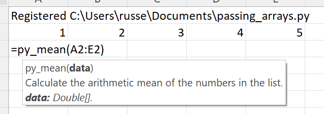
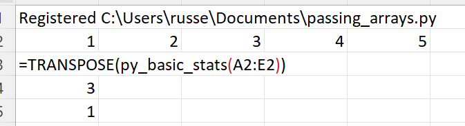
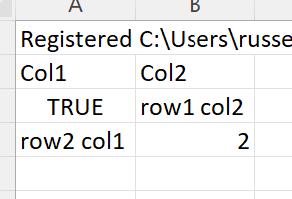

Passing lists¶
xlSlim supports passing lists to and from Excel. The data is read from Excel ranges.
Note
xlSlim has a useful utility function CreateRange() that can be used to create range inputs from non-adjacent cells.
This Python module contains functions to calculate basic statistics on lists of numbers. As usual the code has no changes to support xlSlim.
import statistics
from typing import List
def basic_stats(data: List[float]) -> List[float]:
"""Returns a list of [mean, median, mode] of the supplied list."""
return [mean(data), median(data), mode(data)]
def mean(data: List[float]) -> float:
"""Calculate the arithmetic mean of the numbers in the list."""
return statistics.mean(data)
def median(data: List[float]) -> float:
"""Calculate the median of the numbers in the list."""
return statistics.median(data)
def mode(data: List[float]) -> float:
"""Calculate the mode of the numbers in the list."""
return statistics.mode(data)
Note
All the Python code and Excel files shown are available from github in the xlslim-code-samples repo. I highly recommend downloading the samples from github. The Excel workbooks contain many tips and tricks.
Save the Python code as a new file on your PC. I saved the file in my Documents folder.
Open Excel and enter this RegisterPyModule() formula (amending the location to match where you saved the file):
=RegisterPyModule("C:\Users\russe\Documents\passing_arrays.py",,"py_")
The function is now available to use in Excel. Note how the module functions were registered with the py_ prefix so they do not clash with the builtin Excel functions with the same names.
Create a range of numbers to use as inputs. Then call py_mean passing in the range.
{kind=link}
xlSlim supports passing lists back from Python. The basic_stats function returns a list from Python with the mean, median and mode of the supplied data. The function output resizes automatically.
{kind=link}
Notice how the Excel TRANSPOSE function was used to flip the results from one row (default) to one column.
Returning nested lists¶
xlSlim will unroll a returned list of lists so each inner list is a row in Excel. The simple Python function below returns a list of lists.
def return_matrix():
return [
["Col1", "Col2"],
[True, "row1 col2"],
["row2 col1", 2.5],
]
Add the function to passing_arrays.py and reload the module using the RegisterPyModule() function.
Call the function and you will see the functions results are handled correctly:
{kind=link}